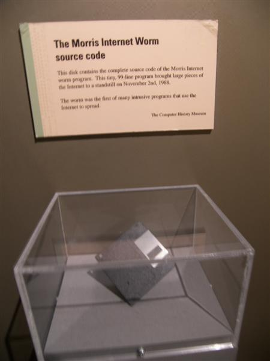
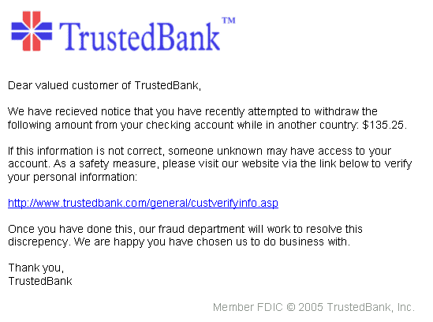

fotografierende
fotografierende
Good morning!
Nur das Schöne wird die Welt retten!
Fjodor Dostojewski
Nicht verzagen, Doc Alvers fragen!
Informatik — Grundkurs 11
Digitale Angriffe
Bedrohungsanalyse I: wer angreift, womit — und was die meisten Türen schließt
Nicht verzagen, Doc Alvers fragen!
Wo wir stehen
Klassenarbeit 1 ist geschrieben — heute beginnt Lernbereich 3: IT-Sicherheit und Ökologie
Die ersten Stunden: Bedrohungsanalysen — was kann schiefgehen, und warum?
Heute die Angriffe mit Absicht, nächste Woche Versagen, Katastrophen und Täuschung
Leitfrage: Wie kommen Angreifer an Daten — und was hält sie auf?
Nicht verzagen, Doc Alvers fragen!
Kapitel 01
Bedrohungen analysieren
Schutzobjekt, Schwachstelle, Angriff
Nicht verzagen, Doc Alvers fragen!
Zuerst: Was ist schützenswert?
Eine Bedrohungsanalyse beginnt mit dem Schutzobjekt: Was ist wertvoll?
Dann: Welche Bedrohungen, welche Schäden — erst zuletzt die Maßnahmen
Schwachstelle: die Möglichkeit — Angriff: ihre Ausnutzung
Eine Schwachstelle kann jahrelang unbemerkt bestehen
Werkzeuge wie Virenscanner kommen zuletzt, nicht zuerst
Nicht verzagen, Doc Alvers fragen!
Wer greift an — und warum?
| Bedrohung | Ziel | Beispiel |
|---|---|---|
| Wirtschaftsspionage | Wissen stehlen | Baupläne, Kundenlisten |
| Sabotage | Betrieb stören | die Produktion steht still |
| Cyber-Krieg | einen Staat schwächen | Angriff auf Strom- und Wassernetze |
| Datenverfälschung | Vertrauen zerstören | geänderte Messwerte oder Kontostände |
| Cyber-Mobbing | Menschen verletzen | Bloßstellen in Gruppenchats |
Der BSI-Lagebericht fasst jedes Jahr die Lage der IT-Sicherheit in Deutschland zusammen
Nicht verzagen, Doc Alvers fragen!
Kapitel 02
Schadsoftware
Viren, Würmer, Trojaner, Ransomware

Nicht verzagen, Doc Alvers fragen!
Malware — der Oberbegriff
| Art | Kennzeichen |
|---|---|
| Virus | hängt sich an eine Wirtsdatei und braucht sie zur Verbreitung |
| Wurm | verbreitet sich selbstständig über Netze — deshalb oft schneller |
| Trojaner | täuscht eine nützliche Funktion vor, schadet im Hintergrund |
| Ransomware | verschlüsselt Daten und fordert Lösegeld |
| Keylogger | schneidet Tastatureingaben mit, als Programm oder Stecker |
Gegen Ransomware hilft verlässlich nur eine getrennte Sicherung — Zahlen garantiert nichts
Nicht verzagen, Doc Alvers fragen!
Gekaperte Geräte: Botnetze
Ein Botnetz ist ein Verbund gekaperter Geräte, die ferngesteuert angreifen
Die Besitzer merken davon meist nichts
Gern genommen: Router und Kameras — dauerhaft am Netz, selten aktualisiert
Botnetze verschicken Spam und betreiben DDoS-Angriffe
Der Trojaner-Trick: Den Schädling installiert der Nutzer selbst
Nicht verzagen, Doc Alvers fragen!
Kapitel 03
Täuschen und überlasten
Phishing, DDoS, Man in the Middle

Nicht verzagen, Doc Alvers fragen!
Phishing
Phishing: mit gefälschten Nachrichten an Zugangsdaten kommen
Die Mail sieht aus wie von Bank oder Schule — der Link führt auf eine nachgebaute Seite
Erkennen: an der echten Zieladresse des Links und am unerwarteten Zeitdruck
Absendernamen lassen sich fälschen — und gute Fälschungen haben keine Rechtschreibfehler
Spear-Phishing: gezielt auf eine Person zugeschnitten, mit Name, Rolle und Umfeld
Nicht verzagen, Doc Alvers fragen!
Angriffe auf Dienste und Verbindungen
| Angriff | Was passiert | Was schützt |
|---|---|---|
| DDoS | sehr viele Rechner überlasten einen Dienst | Filter, Lastverteilung |
| Man in the Middle | jemand klinkt sich in eine Verbindung ein | Verschlüsselung, Zertifikate |
| SQL-Injection | Datenbankbefehle über ein Eingabefeld | Eingaben prüfen |
DDoS übernimmt den Dienst nicht — er macht ihn unerreichbar
Ein Zertifikat bestätigt: Der Server gehört zur Adresse im Browser — über den Inhalt sagt es nichts
Nicht verzagen, Doc Alvers fragen!
Kapitel 04
Schützen
Passwörter, zweiter Faktor, Updates
Nicht verzagen, Doc Alvers fragen!
Brute Force und die Länge des Passworts
Brute Force: Passwörter systematisch durchprobieren — Rechenleistung statt Idee
Jede zusätzliche Stelle vervielfacht die Zahl der Möglichkeiten
8 Zeichen aus 62 (Buchstaben, Ziffern):
12 kleine Buchstaben: — über 400-mal so viele
Deshalb: lange Passphrasen — und eine Sperre nach wenigen Fehlversuchen
Nicht verzagen, Doc Alvers fragen!
Zwei-Faktor-Authentisierung
Zum Wissen (Passwort) kommt ein zweiter, unabhängiger Nachweis
Faktoren: Wissen, Besitz, Eigenschaft — etwa Passwort, Smartphone, Fingerabdruck
Ein gestohlenes Passwort allein nützt dem Angreifer dann nichts
Auch ein mitgeschnittenes Passwort vom Keylogger reicht nicht mehr
Wichtig: Der zweite Faktor muss wirklich unabhängig sein
Nicht verzagen, Doc Alvers fragen!
Updates und Zero-Days
Die meisten Angriffe nutzen längst bekannte, schon geschlossene Lücken
Angreifer suchen automatisiert nach veralteten Versionen — ein Update schließt genau diese Tür
Zero-Day: eine Lücke, für die es noch keine Korrektur gibt
Der Hersteller hatte null Tage Zeit — hier helfen nur allgemeine Schutzmaßnahmen
Zero-Days sind selten, veraltete Software ist häufig
Nicht verzagen, Doc Alvers fragen!
Jeder Angriff braucht eine Schwachstelle — wer weiß, was schützenswert ist, Updates einspielt, lange Passwörter und einen zweiten Faktor nutzt, schließt die meisten Türen.
Merksatz
Nicht verzagen, Doc Alvers fragen!
Fun Facts
Das erste bekannte selbstkopierende Programm, Creeper, wanderte 1971 durchs ARPANET
Der Morris-Wurm legte 1988 einen großen Teil des damaligen Internets lahm
2016 legte das Mirai-Botnetz aus gekaperten Kameras und Routern große Websites zeitweise lahm
Phishing ist an „fishing“ angelehnt: Man angelt nach Zugangsdaten
Nicht verzagen, Doc Alvers fragen!
Eure Aufgabe
Gruppenrecherche im PC-Kabinett: ein aktueller Angriff aus Nachrichten oder BSI-Lagebericht
Analysiert den Fall: Schutzobjekt, Schwachstelle, Angriff, Schaden
Ordnet ein: Spionage, Sabotage, Cyber-Krieg, Datenverfälschung oder Cyber-Mobbing?
Kurzvortrag (3 Minuten): der Fall — und was ihn verhindert hätte
Zum Schluss: Aufgaben (20) auf der Planseite — Lösung pro Aufgabe zum Aufklappen
Nicht verzagen, Doc Alvers fragen!